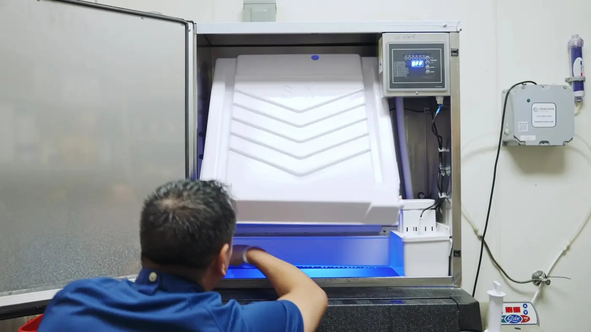
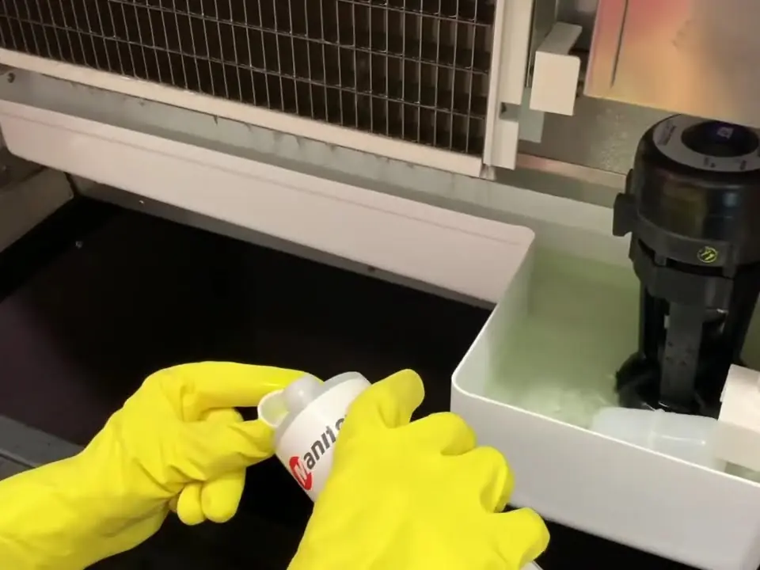
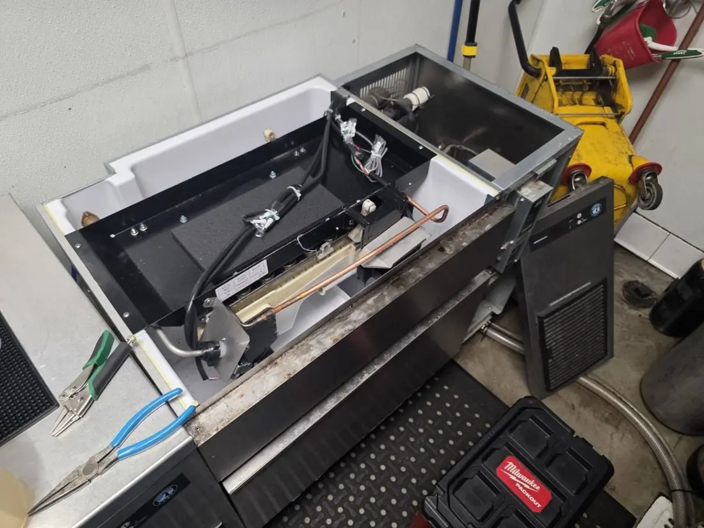
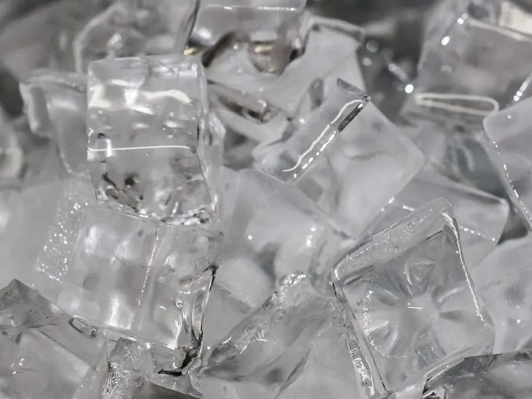
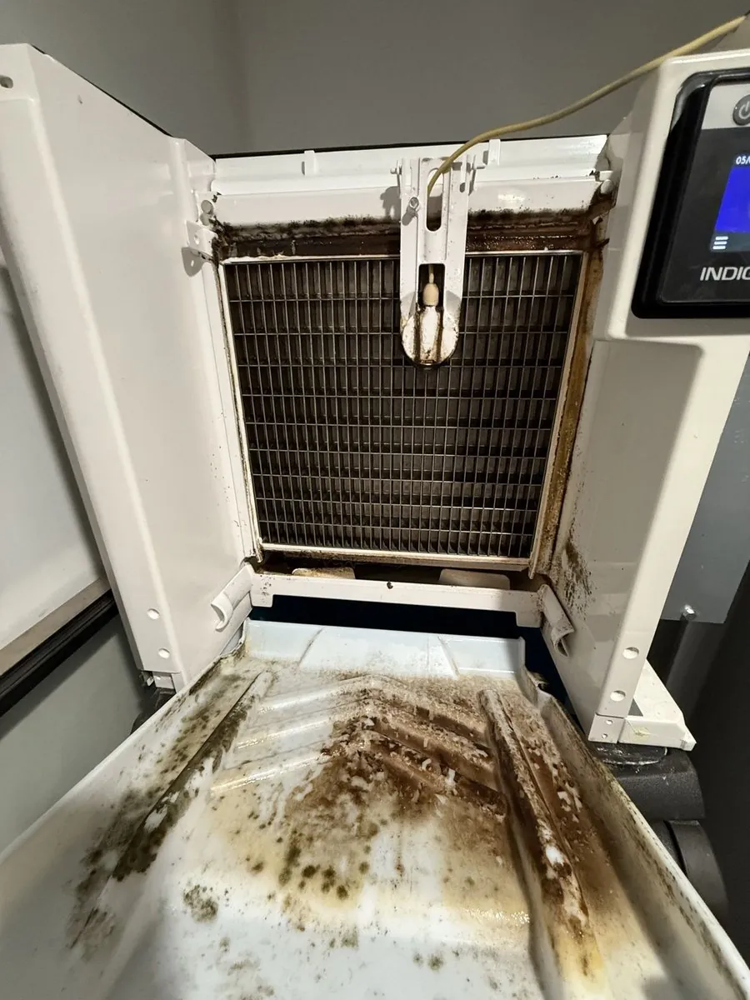
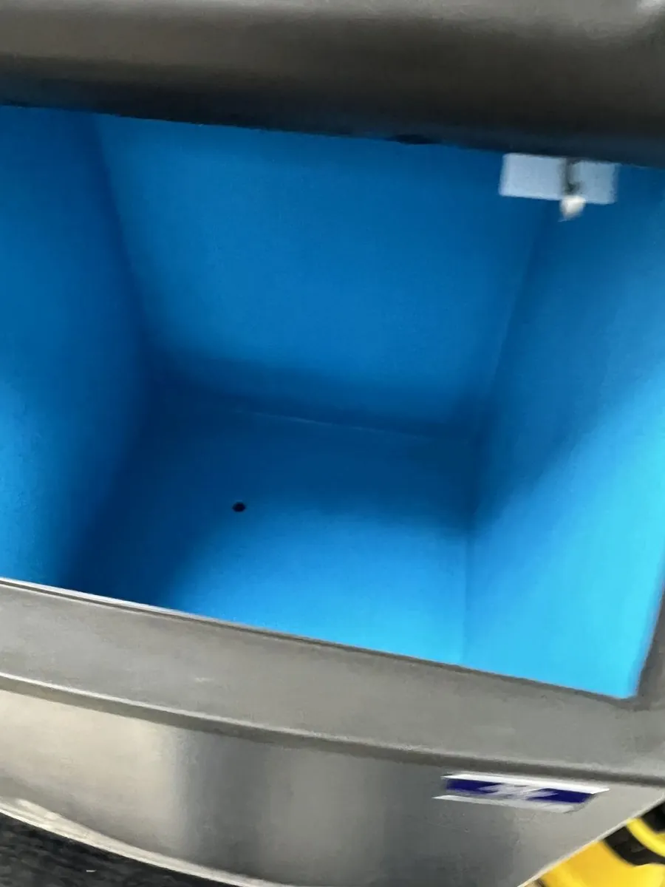
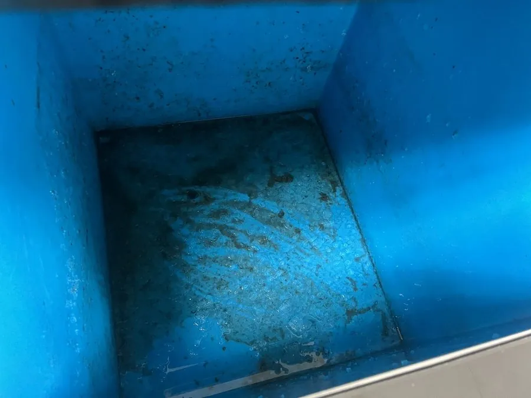
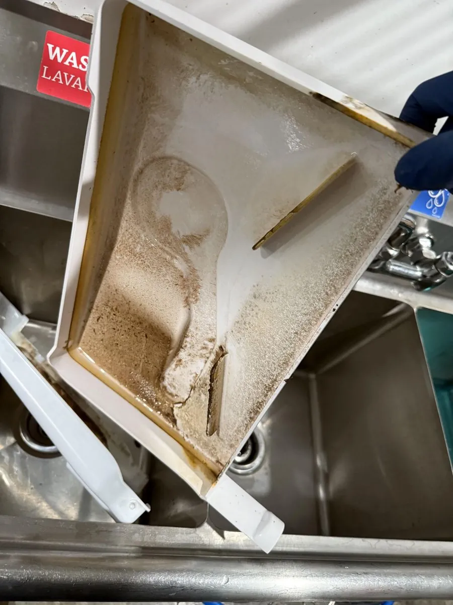

업소용 제빙기 완전분해 세척 · 고온 스팀 살균
얼음은 식품입니다.
보이지 않는 곳까지
완전분해 살균세척
카페와 프랜차이즈, 베이커리, 사무실의 제빙기를 물이 닿는 부품까지 분해해 세척하고 고온 스팀으로 살균합니다. 손님의 잔에 닿는 얼음이니까, 눈에 보이지 않는 곳까지 관리합니다.
대표번호는 준비 중입니다. 상담 신청서를 남겨 주시면 확인 후 연락드립니다.

-
전 브랜드 · 전 기종모델명을 몰라도 사진 한 장으로 확인
-
6단계 분해 세척상담부터 얼음 확인까지
-
고온 스팀 살균잔여 세제 없이 헹궈 마감
-
양주 기준 1시간 권역수도권 북부 14개 지역 출장
Why cleaning
겉은 멀쩡해 보여도, 속은 다릅니다
제빙기 내부는 물이 계속 닿고 어둡고 습합니다. 관리가 없으면 오염이 쌓이기 쉬운 구조라, 얼음에서 냄새가 나거나 맛이 달라졌다면 이미 신호가 온 것입니다.
-
01
곰팡이·세균 번식
저수조와 급수 라인, 얼음 저장고는 세균과 곰팡이가 자라기 좋은 환경입니다. 눈에 보이는 얼음은 깨끗해도 지나온 경로는 오염될 수 있습니다.
-
02
물때와 스케일
수돗물의 미네랄이 제빙판과 노즐에 쌓이면 얼음이 잘 떨어지지 않고 생산량이 줄어, 기계에 무리가 가기 시작합니다.
-
03
얼음의 냄새와 맛
오염이 쌓이면 얼음이 흐려지고 모양도 고르지 않게 나오며, 쿰쿰한 냄새가 음료 본연의 맛을 해칩니다.
-
04
고장 예방과 수명
펌프·밸브·센서에 낀 이물질은 잔고장의 원인이 됩니다. 정기적인 분해 세척이 큰 수리비를 막는 가장 확실한 방법입니다.
Core process
4대 핵심 분해세척 공정
고압 스팀 살균부터 투명한 얼음 확인까지, 순서대로 진행합니다. 단계를 눌러 공정별 내용을 확인하세요.



Service scope
손이 닿지 않는 곳까지, 분해해서 닦습니다
표면만 닦는 청소가 아닙니다. 물과 얼음이 지나가는 부품을 분해해 세척하고 살균합니다.
- 01
상판·커버 분리
내부를 완전히 열어 작업합니다.
- 02
냉판(제빙판)
석회와 물때를 탈거합니다.
- 03
워터펌프
분해해 친환경 세제로 세척합니다.
- 04
호스·노즐·파이프
탈거해 내부까지 세척합니다.
- 05
내부 벽면
검수 후 분해 세척합니다.
- 06
물받이 받침대
물이 고이는 곳을 집중 세척합니다.
- 07
깊은 내부
스팀 고압세척 후 헹굽니다.
- 08
조립·최종 확인
얼음 생성·투명도·모양을 확인합니다.
작업 중에는 제빙기를 잠시 멈춥니다. 얼음은 미리 비축해 두시거나 저희가 보관해 드리며, 손님 동선을 고려해 마감 후 진행을 기본으로 상의합니다.
Before · After
청소 전·후, 이렇게 달라집니다
물과 얼음이 닿는 곳은 시간이 지나면 곰팡이와 석회·물때가 쌓입니다. 손잡이를 좌우로 움직여 분해 세척 전과 후를 비교해 보세요.

제빙기 내부 — 곰팡이와 물때로 덮였던 냉판 주변과 내부 벽면을 분해 세척한 모습입니다.


얼음 저장고 — 검은 곰팡이가 번졌던 저장고 벽과 바닥을 세척·살균한 모습입니다.

물받이 부품 — 석회와 침전물이 쌓였던 물받이를 분해해 세척하면 이렇게 달라집니다.
B2B regular care
업종에 맞춘 정기 관리
한 번만 맡기셔도, 정기로 맡기셔도 청소 내용은 같습니다. 분해 세척부터 스팀 살균까지 같은 공정으로 진행되고, 달라지는 것은 방문 횟수뿐입니다.
-
카페 · 커피전문점
아이스 음료 비중이 높아 얼음 상태가 매출과 직결되는 매장입니다.
- 사용량 기준 방문 주기 상담
- 오픈 전·마감 후 일정 조율
- 얼음 투명도 정기 확인
-
베이커리 · 디저트
진열과 포장이 많아 위생 관리가 눈에 보이는 매장입니다.
- 제빙기와 함께 매장 위생 상담
- 쇼케이스 주변 물기·곰팡이 관리
- 방문마다 관리 기록
-
프랜차이즈 · 다점포
여러 지점을 같은 기준으로 관리해야 하는 매장입니다.
- 지점별 방문 일정 통합
- 모든 지점 동일한 6단계 공정
- 지점 담당자와 직접 조율
-
사무실 · 공용 라운지
탕비실과 라운지의 제빙기는 관리 주체가 없는 경우가 많습니다.
- 업무 일정에 맞춘 방문 조율
- 눈에 띄지 않는 배관까지
- 정기 관리 표시 부착
-
STEP 01
현장 진단
모델과 사용량, 오염 상태를 확인합니다. 모델명을 몰라도 사진으로 확인합니다.
-
STEP 02
주기 설계
매장 사정에 맞춰 방문 간격을 상의해 정합니다. 정해진 기준을 강요하지 않습니다.
-
STEP 03
방문 관리
같은 공정으로 관리하고, 점검 결과를 매장에 남깁니다.
Hygiene mark
위생 안심존 표시
정기 관리 매장에는 마지막 점검일과 다음 방문 예정일을 적은 스티커를 부착합니다. 손님이 보는 자리에서 위생 관리가 눈에 보이게 됩니다.
- 매장 부착용 스티커제빙기 또는 카운터 옆에 붙이는 표시입니다.
- 점검일 · 담당 기재마지막 분해 세척일과 담당자를 적습니다.
- 다음 방문일 표시다음 방문 예정일을 함께 적어 관리 주기를 보여줍니다.
‘위생 안심존’은 아이스랩이 정기 관리 매장에 부착하는 자체 표시입니다. 공인 인증기관의 인증서나 인증마크가 아닙니다.
Service brands
세척 가능 브랜드 17종
브랜드마다 분해 구조가 다르고, 얼음 모양과 냉각 방식에 따라 세척 포인트도 다릅니다. 목록에 없는 브랜드도 모두 진행합니다.
- 호시자키Hoshizaki
- 카이저Kaiser
- 브레마Brema
- 아이스트로Icetro
- 라셀르Lassele
- 네오트Neot
- 매니토웍Manitowoc
- 스카치맨Scotsman
- 아이스오매틱Ice-O-Matic
- 신일Shinil
- 아쿠아글로리Aqua Glory
- 한솔Hansol
- 나까조Nakazo
- 아이스웰Icewell
- 스키피오Scipio
- 크라운Crown
- 스타Star
모델명을 몰라도 괜찮습니다. 모델명 스티커 사진이나 제빙기 전체 사진 한 장이면 기종을 확인해 드립니다.
사진으로 상담 신청Partners
함께하는 커피 브랜드
프랜차이즈부터 동네 개인 카페까지, 얼음을 쓰는 곳이라면 함께합니다.
- 빽다방
- 메가MGC커피
- 투썸플레이스
- 컴포즈커피
- 우지커피
- 바나프레소
- 백억커피
- 더벤티
- 이디야커피
- 할리스커피
- 파스쿠찌
- 이공커피
- 매머드익스프레스
- 하삼동커피
- 텐퍼센트스페셜티커피
- 커피빈
- 카페봄봄
- 개인 카페 · 동네 커피숍
FAQ
자주 묻는 질문
Q청소 비용은 얼마인가요?
Q청소에 시간은 얼마나 걸리나요?
Q정기 청소와 1회 청소는 뭐가 다른가요?
Q영업 중에도 청소가 가능한가요?
Q제빙기 모델명을 모릅니다. 그래도 되나요?
Q출장이 안 되는 지역이면 어떻게 하나요?
Online consult
온라인 상담 신청
매장명과 연락처, 대략적인 지역만 알려 주셔도 상담이 시작됩니다. 모델명을 모르시면 비워 두셔도 되고, 사진은 상담 후에 보내 주셔도 됩니다.
- 금액 먼저 안내기종과 오염 상태를 확인한 뒤 비용을 먼저 알려 드립니다. 현장에서 임의로 금액이 바뀌지 않습니다.
- 매장 일정에 맞춰오픈 전, 영업 중, 마감 후 중 편한 시간으로 방문 일정을 잡습니다.
- 양주 기준 1시간 권역양주·의정부·동두천·포천·연천, 파주·고양·남양주·구리·하남, 도봉·강북·노원·성북·은평·중랑.
신청 내용을 확인해 주세요
아래 내용으로 상담이 접수됩니다. 전화번호가 정해지기 전까지는 이 내용을 복사해 블로그로 보내 주시면 확인이 빠릅니다.
시안 단계 안내 — 지금은 디자인 시안으로, 신청서가 서버로 전송되지는 않습니다. 정식 오픈 시 알림톡·문자·이메일 접수 채널을 연결하면 이 화면에서 바로 접수됩니다.